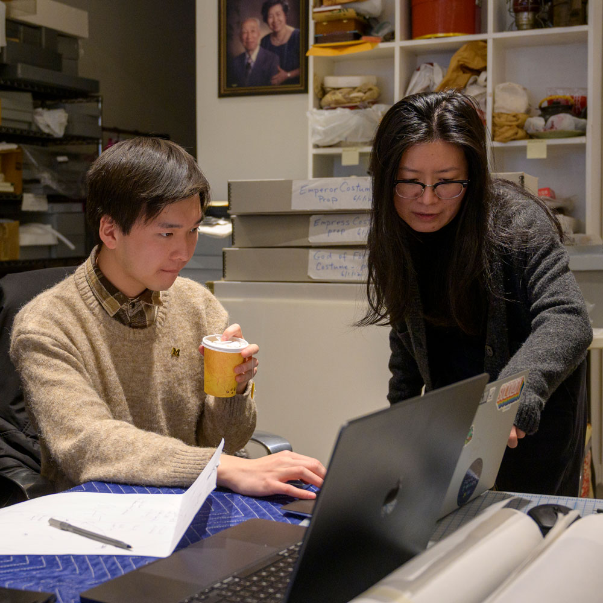

Launch Your Engaged Learning Journey
Transform your academic foundation into real-world impact. The UMSI Engaged Learning Office (ELO) guides you through the crucial early stages of project work—from self-reflection and community context to team charters and initial client kickoff.
Why the Work Starts Before the Project
Engaged learning at UMSI is fundamentally different from traditional classroom assignments. You are stepping out of controlled environments and into complex, unscripted ecosystems where technical solutions intersect with human lives, organizational cultures, and real community needs.
The initial phase of a project is rarely about jumping straight into execution—it is about building the foundation for ethical, sustainable engagement. Taking time to reflect on your own positionality, audit your team's collective skills, and listen deeply to your partner's goals prevents project failure down the line. When you ground your project in mutual respect, clear boundaries, and honest communication from Day 1, you transform a simple class deliverable into a reciprocal partnership that creates authentic value for everyone involved.
Phase 1: Preparing for the Experience
Setting the foundation, understanding community context, and evaluating team readiness before work begins.
Value & Narrative
Before writing code, sketching wireframes, or analyzing datasets, engaged learners must cultivate social identity awareness and ethical humility. Entering a community or client environment without examining your own assumptions can lead to misaligned expectations or unintended harm. Preparing thoughtfully allows you to approach partners not as an outside "expert" fixing a problem, but as a collaborative learner working alongside stakeholders.
Focus & Objectives
- Social & Community Awareness: Examine personal identity, privilege, and community dynamics using civic engagement frameworks.
- Expectation & Role Alignment: Understand program requirements, project commitments, and leadership responsibilities.
- Initial Scoping: Assess organizational needs and evaluate initial project viability.
Featured Resources & Handouts
Phase 2: Starting the Experience

Establishing professional communication, conducting initial meetings, and finalizing partnership agreements.
Value & Narrative
First impressions shape the trajectory of a partnership. The starting phase is where abstract project ideas turn into structured, professional commitments. By establishing clear team contracts, co-creating agendas, and aligning on project scope early, you build psychological safety within your team and trust with your client. Learning how to navigate early ambiguity is one of the most valuable professional capabilities you will gain at UMSI.
Focus & Objectives
- Partner Communication: Draft clear, professional outreach to launch working relationships.
- First Meetings: Structure productive kickoff meetings that define roles and project bounds.
- Formalizing Agreements: Document team commitments and scope agreements shared by all stakeholders.
Featured Resources & Handouts